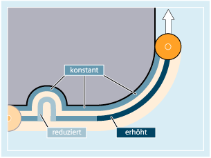

Vorschuboptimierung bei gekrümmten Bahnstücken (CFTCP, CFC, CFIN): Weitere Informationen
Weitere Informationen
Konstanter Vorschub an der Kontur mit CFC

Die Vorschubgeschwindigkeit wird bei Innenradien reduziert, bei Außenradien erhöht. Hierdurch bleibt die Geschwindigkeit an der Werkzeugschneide und damit an der Kontur konstant.